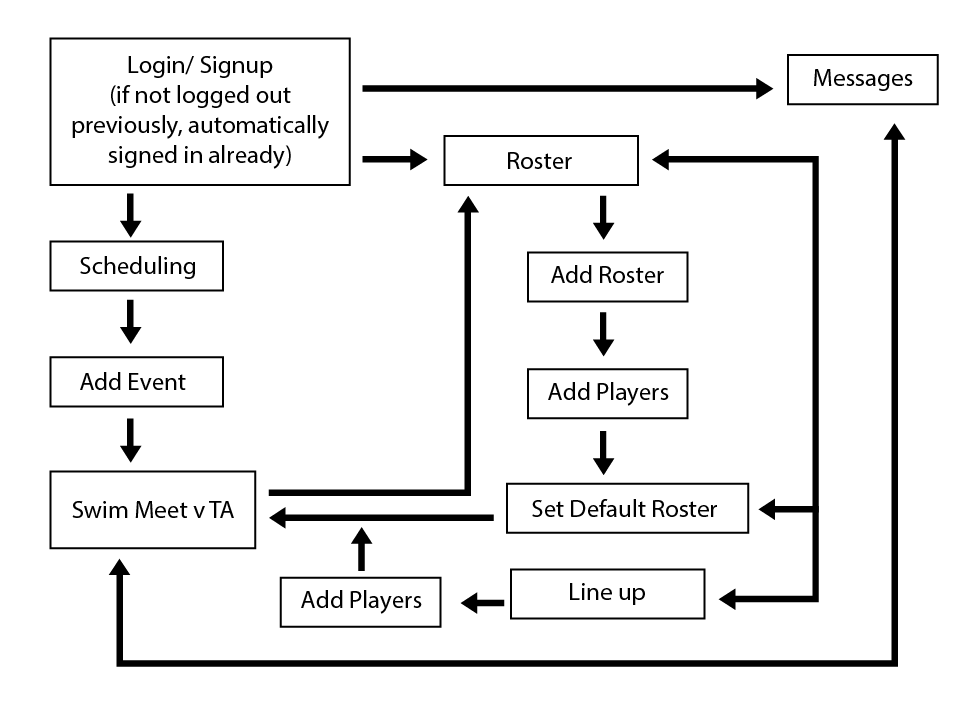
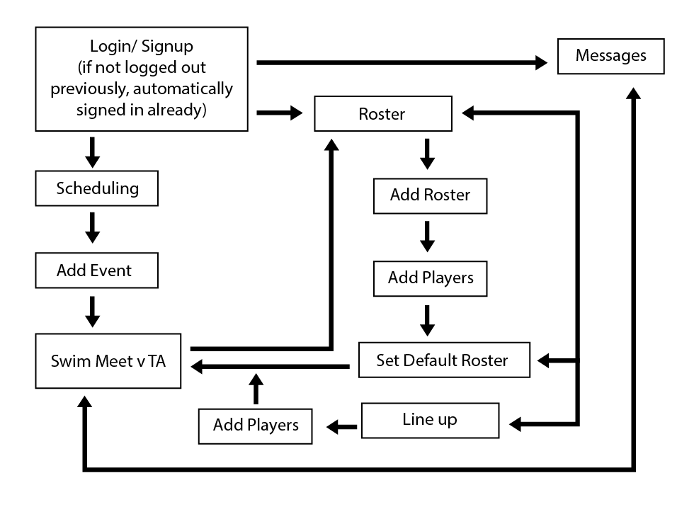

RecSports
This is an idea I had for a management app. I was given a prompt to make an app that a coach or lead of a recreational sports team would use to assign team members, schedule practice times, races and matches and keep in touch with their team for upcoming events. I decided to go with swimming as my sport, mostly because I was on a swim team growing up and could easily relate and know the information and terminology that goes with organizing a meet.
View the live prototype on InVision here: RecSport Swim


After knowing that my subject was going to be a recreational swim team, the next step was figuring out what kind of a swim team the app would be catered towards. I thought about a team that was all about fun, a team that took themselves very seriously, a team made up of parents and people with families. I ended mixing up the three while emphasizing the "serious coach" persona.
This was one of my first practices with use cases, user flows and really getting into the headspace of a target audience. After creating a bunch of personas and user flows I decided on aiming the app at the person who'd probably use it most often; the coach (or lead of the team). With this type of person in mind, I knew I needed this app to be easy to navigate through and easy to read. Coaches have a lot of information to deal with, and in a scenario where they can schedule practices, announce events, and even assign their swimmers for upcoming meets from one place, feasibility is of the highest importance.

 

{kind=link}
This was also one of my first projects where I got to use paper prototypes. I was able to share ideas with my peers and gain some pretty good information about what's actually become second nature to our app use and what hasn't. Because of this, I was able to create the flow for my app that I felt fit best.
The app would be split among the three major processes; scheduling meets, assigning team members, and announcing events. Thanks to these focal points I was able to organize all the other information fairly easily, especially when comparing what I was intending to do with apps that were already out there.